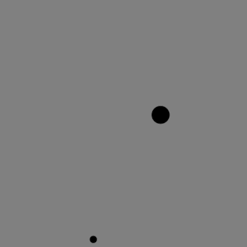
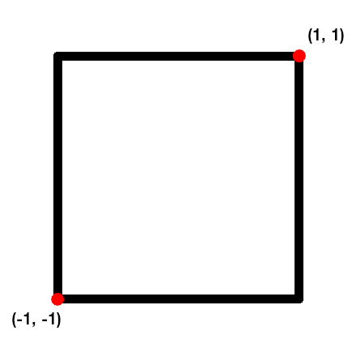

Stuiterbal
Inhoud
Stuiterbal¶

Doel¶
Klassen ontwerpen
Begrip van het verschil tussen een statische- en object context
Het gebruiken van collecties (de klasse
ArrayList)Een probleem opdelen in kleinere delen
In deze opgave ga je een klasse Ball schrijven die een bal representeert in een besloten tweedimensionale ruimte, met een bepaalde snelheid.
Download en pak het projectbestand bouncing_balls.zip uit. Dit project bevat een begin van de klasse Ball die je in de opgave verder gaat uitwerken. Verder bevat het een (Maven) projectconfiguratie die zorgt dat zowel Junit (voor het eventueel schrijven van tests) als stdlib (voor het kunnen tekenen van Ball objecten) in de IDE te gebruiken zijn.
Inleiding¶

Fig. 29 Positievector¶
Een punt in een tweedimensionale ruimte wordt beschreven als een vector. Deze vector (de positievector \(\vec{r}\)) zijn de coordinaten \((r_x, r_y)\) ten opzichte van een oorsprong \(O\), zie Fig. 29.
Fig. 30 Optelling van vectoren¶
Snelheid kan ook als een vector worden beschreven (de snelheidsvector \(\vec{v}\)) waarin de mate van verandering per tijdseenheid wordt gedefinieerd. In een tweedimensionale ruimte zal dit de verplaatsing \((v_x, v_y)\) zijn voor \(\vec{r}\). Om twee vectoren op te tellen worden de overeenkomstige componenten opgeteld (8).
Voor elke verandering per tijdseenheid zal de nieuwe positievector \(\vec{r}\) dus het resultaat zijn van \(\vec{r} + \vec{v}\).
Opgave¶
In deze opgave ga je een klasse Ball uitwerken die een punt in een tweedimensionale ruimte representeert, met een bepaalde snelheid. Deze klasse zal als data een positievector en een snelheidsvecor moeten bevatten, en een radius die de grootte van de bal aangeeft.
De ruimte waarin de het object zicht in beweegt is begrensd en je zal rekening moeten houden met het geval dat wanneer deze grens wordt bereikt het object een andere richting op zal moeten “stuiteren” (met andere woorden, de snelheidsvecor zal op dat moment wijzigen).
De klasse StdDraw uit de stdlib bibliotheek ga je in deze opgave weer gebruiken voor het tekenen van objecten. De coördinaten van het vlak waar je op gaat tekenen zijn als volgt, waar de oorsporong \(O\) gelijk is aan \((0, 0)\)

Mogelijke stappen¶
Velden en constructor¶
De eerste gedachte bij de beschrijving van vectoren en hoe je dit als datastructuur zou kunnen vormgeven zal misschien een array met twee elementen zijn. Dit is geen vreemde gedachte, maar bedenk dat je in een klasse niet direct aan dit soort structuren gebonden bent, je hebt een keuze om de vorm van de data te bepalen. Wij raden je aan om de volgende velden voor de klassen te definiëren:
// position vector r
private double rx;
private double ry;
// velocity vector v
private double vx;
private double vy;
// ball radius
private double radius;
De constructor van de klasse Ball zal velden moeten initialiseren. Schrijf een constructor (zonder parameters) en initialieer de velden als volgt:
de beginpositie \((r_x, r_y)\) is altijd gelijk aan de oorsprong \(O\)
de snelheid \((v_x, v_y)\) bepaal je willekeurig, het volgende zou een goede optie kunnen zijn voor zowel \(v_x\) als \(v_y\)
0.015 - Math.random() * 0.03
de radius zet je ook willekeurig, de volgende variatie op het bovenstaande is een mogelijke optie:
0.025 + Math.random() * 0.05
Beweging¶
Met elke tijdseenheid zal het object op basis van de positievector en snelheidsvector een nieuwe positie kijgen (een nieuwe positievector). Het object heeft te maken met grenzen, het kan tegen een horizontale- (boven- en onderkant van het vlak) of verticale (linker- of rechterkant van het vlak) grens aanlopen.
Bij een verticale grens zal vectorcomponent \(v_y\) van richting veranderen en bij een horizontale grens vectorcomponent \(v_y\). Beredeneer ook voor jezelf waarom dit zo is.
Scrijf de volgende twee methoden die zullen moeten controleren of een grens is bereikt en zo nodig de snelheidsvector aanpassen.
// bounce off vertical wall by reflecting x-velocity
private void bounceOffVerticalWall()
// bounce off horizontal wall by reflecting y-velocity
private void bounceOffHorizontalWall()
Controleer in deze methoden of een grens is bereikt en pas indien nodig de snelheidsvector aan. Bedenk dat de optelling van een positievector met een snelheidsvector de volgende positie geeft. Indien deze de grens overschrijdt (de waarde 1, want dat is het bereik van het veld), dan pas je de snelheidsvector aan. Houd er ook rekening mee dat de bal een radius heeft, neem dit mee in de berekening!
De positievector ga je in deze twee methoden niet aanpassen, dit ga je doen in de volgende methode:
// move the ball one step
public void move()
De methode move zal eerst bounceOffVerticalWall en bounceOffHorizontalWall aanroepen. Vervolgens zal het de positievector aanpassen als optelling van de snelheidsvector.
Tip
De verandering van richting zal de negatie van een component betekenen. Je kan hier de volgende syntax voor gebruiken:
int x = 1;
int x = -x; // x now has value -1
Tekenen¶
De data en handelingen voor een Ball object heb je nu uitgewerkt en je gaat nog één methode toevoegen voor het tekenen van een object. Neem de volgende methode over, je ziet dat hier weer StdDraw gebruikt gaat worden:
// draw the ball, but not the background
public void draw() {
StdDraw.setPenColor(StdDraw.BLACK);
StdDraw.filledCircle(rx, ry, radius);
}
Deze methode is compleet, het staat je natuurlijk vrij een andere kleur te kiezen (random of niet).
Informatie¶
Het kan handig zijn om een toString methode toe te voegen om voor jezelf informatie te kunnen printen over een object, bijvoorbeeld
public String toString() {
String result = "";
result += "position: (" + rx + ", " + ry + ") ";
result += "velocity: (" + vx + ", " + vy + ") ";
result += "radius: " + radius;
return result;
}
Stuiteren¶
De klasse Ball is nu compleet, het doel is nu één of meer ballen in een ruime te laten stuiteren. Dit ga je doen door de methode main aan te vullen:
In
mainga je een eenArrayListinitialiseren (bijvoorbeeld met de naamballs) waar je instanties vanBallaan toe gaat voegen. Begin eerst met een enkele bal, voeg later meer toe zodra je zeker bent dat alles correct werkt.Vervolgens ga je het veld opzetten waar de ballen in moeten gaan bewegen, dit is waar je de grenzen zet. Neem het volgende over:
// initialize standard drawing StdDraw.setXscale(-1.0, +1.0); StdDraw.setYscale(-1.0, +1.0); StdDraw.enableDoubleBuffering();
Notitie
Standaard is dubbele buffering uitgeschakeld voor
StdDraw, wat betekent dat zodra je een tekenmethode aanroept alspoint()ofline()de resultaat direct op scherm verschijnt.Wanneer dubbele buffering is ingeschakeld met
enableDoubleBuffering()wordt eerst getekend op een ander, niet zichtbaar scherm. Pas wanneer jeshow()aanroept wordt de tekening gekopieerd naar het hoofschern waar het wordt getoond. Je kan dubbele buffering zien als het verzamelen van alle lijnen, punten, vormen en tekst die je wilt tekenen, om ze vervolgens in één keer op het scherm te tonen.Voeg nu de lus voor de animatie toe, dit is de lus waar bij elke iteratie de ballen worden bewogen met de methode
moveen getekend worden metdraw. Gebruik de volgende structuur en vul de ontbrekende onderdelen aan waar je door de lijst van ballen gaat:while (true) { // clear canvas and set backgound StdDraw.clear(StdDraw.GRAY); for (...) { // iterate though the list of balls // move the ball // draw the ball } StdDraw.show(); // show the balls on canvas StdDraw.pause(20); // pause before the next cycle }